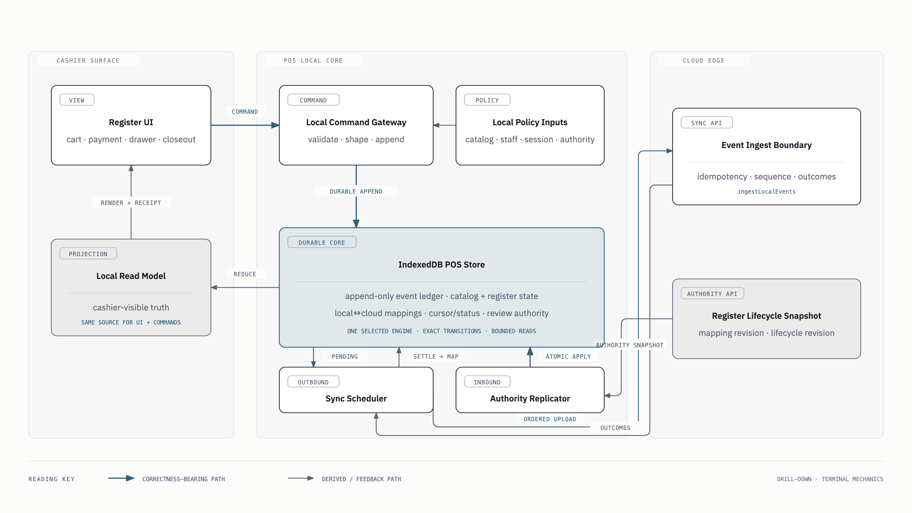
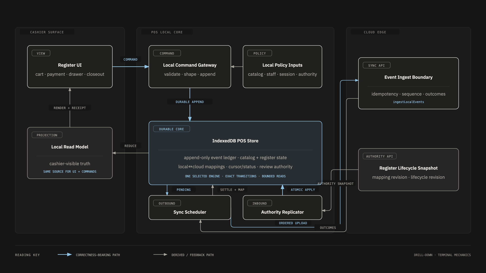
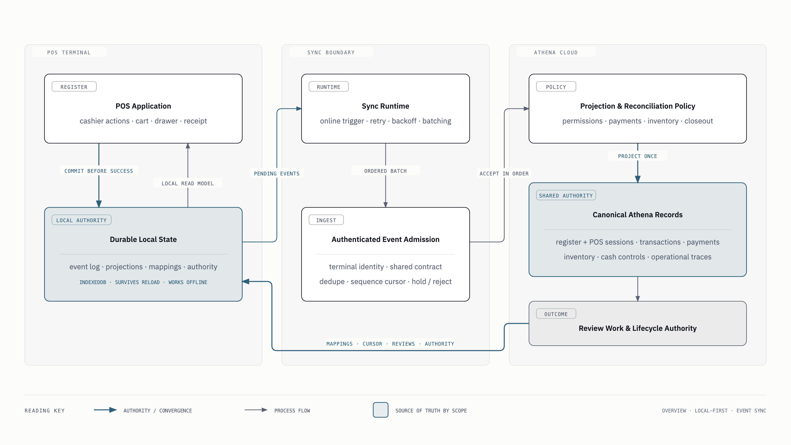
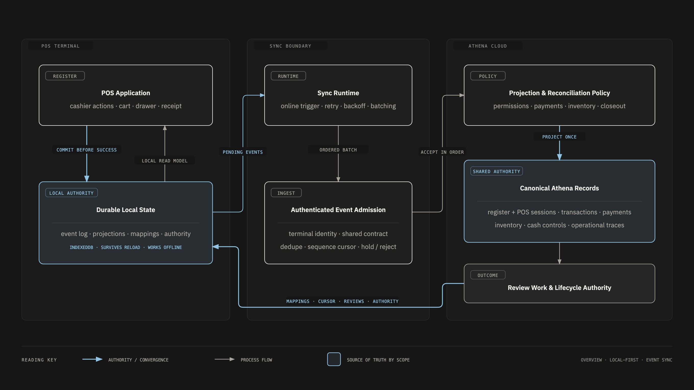

The failure mode
A sale should not depend on a cloud round trip.
An online-first register makes the cashier’s success depend on a cloud round trip: send the command, wait, update the screen. Latency, interruptions, and ambiguous responses can leave a cashier unsure whether a sale was recorded. Adding an offline fallback beside that path creates a second register with different guarantees.
In an offline cash system, the failure that matters most is money changing hands while the record goes missing or wrong.
Athena instead makes local acceptance the primary path in every condition. Connectivity supports synchronization, refreshes cloud context, and carries accepted records upstream; it does not determine whether the register can accept and record an in-person sale.
This register has been Wigclub’s production till since May 2026.
The command boundary
Local evidence exists before cashier success.
On a provisioned, locally authorized register, every cashier event is appended to the durable local record before success returns. Opening a drawer, changing a cart, taking payment, completing a sale, closing out: all of it starts at the same local command boundary, online or not.


- The cashier action starts on an already provisioned and locally authorized register.
- The append local evidence step appends the resulting event to the durable register log.
- Cashier success returns only after the append succeeds, and the interface continues from the local read model.
- Background synchronization uploads the ordered local events when connectivity is available.
- Cloud acceptance or review either projects those events or returns evidence that needs attention.
Connected and disconnected
One operating path, not an offline fallback.
The same append-first path runs when the network is healthy and when it is gone. Connectivity wakes synchronization, refreshes seed data, and validates cloud state. It does not decide whether the cashier’s work is recorded locally first. Cart, payments, receipt context, and register lifecycle all stay recoverable from one event history.
The reversal. The first release got this wrong. It preferred cloud commands whenever the browser claimed to be online, and it was inverted the day after it landed. The fix was to stop trusting that claim entirely: local append is primary in every condition, the cloud is background projection.
Cloud acceptance
Synchronize in order. Reconcile without rewriting history.
When the cloud is reachable, events upload in order through an authenticated terminal boundary. The upload is idempotent, so retrying the same evidence cannot mint a second sale, and accepted mappings tie local identifiers to cloud records.
Acceptance is not the only outcome. A stale product reference, changed authority, or conflicting cloud state becomes manager-visible review work; the completed sale is preserved, the receipt never rewritten, the mismatch never hidden.


- The POS application commits cashier work to durable local state before reporting success.
- The sync runtime uploads pending events as an ordered batch through authenticated event admission.
- Projection and reconciliation policy creates canonical Athena records or review work.
- Mappings, cursor outcomes, reviews, and lifecycle authority return to the terminal.
The bug that taught the sync model
Strict ordering earned its design by failing. Upload order was originally computed at sync time, from events carrying the signed-in cashier’s proof. The failure arrived in three steps: a cashier signed out with unsynced sales, their events dropped out of the upload set, and later staff took earlier sequence numbers. The server did its job correctly: it held the shifted batch as out-of-order, forever.
The fix separated attribution from authority. Every event now gets a durable upload sequence the moment it is written, and the terminal, not the cashier, owns the drain. A cashier who never returns can no longer strand the store’s records.
The same discipline guards the seams. A data-shaped failure is validated before the first write, so one poison event cannot wedge a register’s stream or commit half a sale.
When an earlier policy stranded completed sales, the repair went through the front door: their stored events were replayed through the production projection path, never hand-edited into durable records.
Candid limits
Offline-first is a bounded promise.
POS is Athena’s offline-first workflow; the rest of the operating system is not promised offline. Even the register needs a provisioned terminal, a locally authorized staff member, drawer authority, and healthy on-device storage.
- Last-known stock can drift. A disconnected register can preserve a sale, but it cannot prove another terminal or channel has not changed inventory.
- Cloud validation can wait without disappearing. Deferred events remain visible to synchronization and support flows until validation returns.
- Conflict is evidence, not failure theater. Review work remains explicit rather than being hidden behind an apparently successful sync.
- Accepted cloud projection becomes the cloud source of truth. Local continuity does not grant a terminal authority over every shared business record.
Evidence reviewed
The record behind this page
This reflection is grounded in Athena’s delivery artifacts rather than reconstructed memory: the decisions, reversals, and repairs above are all written down.
- The original local-first requirements brief and the register, offline-entry, staff-authority, and inventory-snapshot plans that carried it.
- The always-local-first inversion plan and its solution note, which record the online-preference reversal.
- The hub-owned sync-drain redesign that fixed the multi-cashier ordering failure.
- The projection-policy notes and the operations runbook for replaying stranded sales through the production projection path.